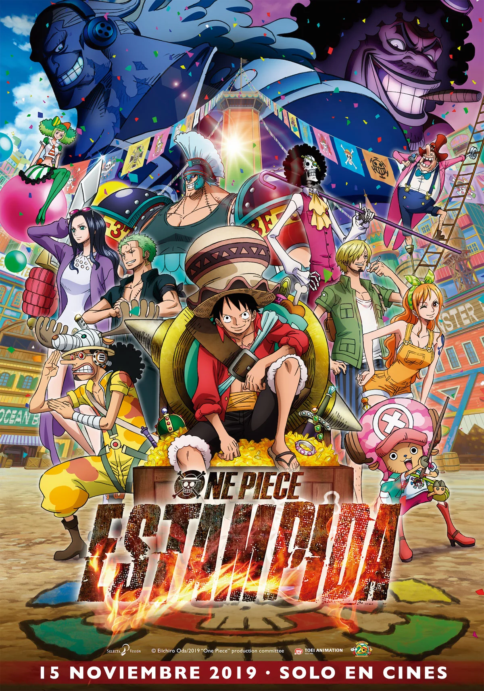

Embárcate en el viaje de tu vida con One Piece. La épica serie de anime creada por el renombrado mangaka Eiichiro Oda es un fenómeno global que ha cautivado los corazones de varias generaciones de fanáticos a lo largo de 25 años. Esta emocionante aventura en alta mar está llena de amistad inquebrantable, batallas épicas por la libertad y la búsqueda incesante de sueños. Acompaña a Monkey D. Luffy y su adorable tripulación pirata mientras descubren el verdadero significado del poder y la justicia.
Monkey D. Luffy se niega a permitir que nada ni nadie se interponga en su camino para convertirse en el Rey de los Piratas. Con sus poderes otorgados por la sobrenatural Fruta del Diablo, el joven y enérgico pirata busca el tesoro legendario conocido como One Piece. Él trazará un rumbo hacia las traicioneras aguas de Grand Line y reclutará un grupo variopinto para conformar sus Piratas de Sombrero de Paja. ¡Este es un capitán que nunca echará anclas hasta que él y sus amigos alcancen sus sueños!
One Piece cuenta con más de 1100 episodios. Actualmente en el arco de Egghead, los Sombrero de Paja por fin conocen al tan esperado Dr. Vegapunk en la Isla Egghead. En Crunchyroll se pueden ver todos los episodios subtitulados y también todos los doblados al inglés, y ya van más de 1000. Además, One Piece cuenta con 13 especiales de televisión y 15 películas, siendo la última, One Piece Film Red, la más taquillera de la franquicia. One Piece está producida por Toei Animation.
Monkey D. Luffy, también conocido como Luffy Sombrero de Paja, es el protagonista principal de la serie de manga y anime One Piece. Por eso encabeza el listado de personajes de One Piece.
Luffy es un pirata que se convirtió en un hombre de goma tras comer la fruta del diablo Gomu Gomu. Es el fundador y capitán de los Piratas Sombrero de Paja y además posee varias habilidades que le hacen ser un pirata muy especial.
Zoro Roronoa o simplemente Zoro, es otro personaje del anime y manga One Piece. Es el segundo capitán y espadachín de la tripulación de Luffy. Fue el primero en unirse a Luffy después de ser salvado por él. Es originario del mar del este, y el dojo donde entrenó está en un pueblo llamado Shimotsuki..
Nami es la navegante de los Piratas del Sombrero de Paja y otro de los principales personajes de One Piece. Nació en la villa Kokoyashi en el East Blue y es el segundo miembro en unirse a la banda, y el cuarto oficialmente después de la derrota de Arlong. Durante la Saga de Baratie, traiciona y abandona a la banda, pero al final de la Saga de Arlong se une oficialmente.
Es el francotirador de la tripulación. Su sueño es llegar a ser un gran pirata como su padre Yasopp, tripulante de la banda de piratas de Shanks "el Pelirrojo".
"Pierna Negra" Sanji, nacido como Vinsmoke Sanji, es el cocinero de los Piratas de Sombrero de Paja y uno de los oficiales superiores de la Gran Flota de Sombrero de Paja. [5] Es el quinto miembro de la tripulación y el cuarto en unirse, haciéndolo al final del Arco de Baratie.
¡Mira el nuevo y emocionante trailer de ONE PIECE: La Película!
Llega el primer vistazo de la adaptación del exitoso manga de Eiichirō Oda, el más popular de la historia... ¡con actores de carne y hueso! «One Piece»
cuentazoroonepiece@gmail.com
+591 123234345
c. 21 # 8461 Ed. Alessandria P1. La Paz